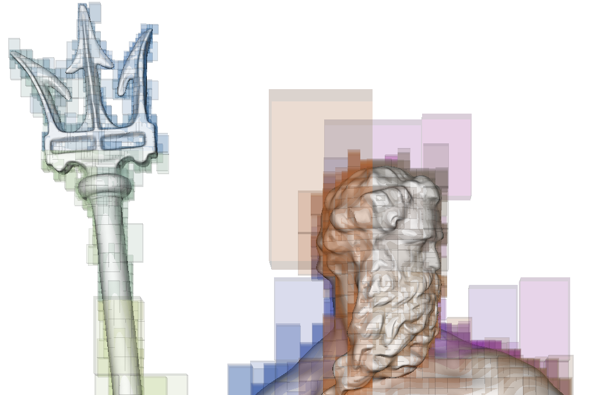
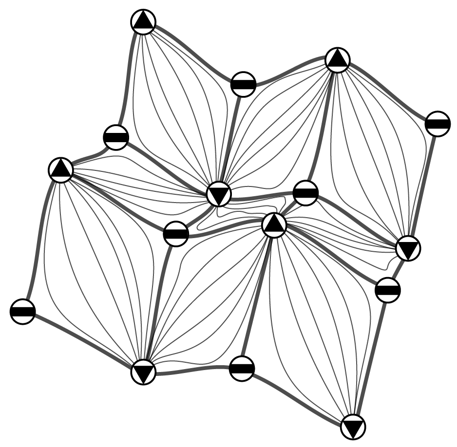

|

Stellar trees In this library we address the problem of the efficient representation and management of simplicial and cell complexes in arbitrary dimension and with arbitrary domain. Managing complexes in three dimensions and higher is not a simple task, since the topological data structures proposed in the literature do not scale when the size and the dimension of a complex become high. We propose the Stellar library as a topological C++ framework for performing efficient topological queries on simplicial and non-simplicial meshes. The Stellar tree library provides a scalable and compact representation that encodes the minimal information to locally reconstruct the topological connectivity of its indexed elements. This provides the flexibility to efficiently construct the optimal data structures to solve the task at hand using a fraction of the memory required for a corresponding topological data structure on the global mesh. The efficiency of the Stellar library increases with the execution of successive queries, as the construction costs of these runtime data structures are amortized over multiple accesses while processing each node. The source code and additional information can be found on GitHub. Main paper:
|

Tetrahedral trees In this library we address the problem of performing efficient spatial and topological queries on large tetrahedral meshes with arbitrary topology and complex boundaries. Such meshes arise in several application domains, such as 3D Geographic Information Systems (GISs), scientific visualization, and finite element analysis. To this aim, we have defined the Tetrahedral trees, a family of spatial indexes based on a nested space subdivision (an octree or a kD-tree) and defined by several different subdivision criteria. In this library, we provide efficient algorithms for spatial and topological queries on tetrahedral meshes. The source code and additional information can be found on GitHub. Main paper:
|
|

Terrain trees In this library a a new in-core family of spatial indexes for the representation and analysis of Triangulated Irregular Networks (TINs) is defined. Terrain trees combine a minimal encoding of the connectivity of the underlying triangle mesh with a hierarchical spatial index, implicitly representing the other topological relations among vertices, edges and vertices. Topological relations are extracted locally within each leaf block of the hierarchal index at runtime, based on specific application needs. This library contains a kernel for connectivity and spatial queries, and modules for extracting morphological features, including edge and triangle slopes, roughness, curvature. It also contains modules for extracting topological structures, like critical point, critical net, watershed segmentation, based on the discrete Morse gradient, and a technique for multivariate data visualization, which enables the analysis of multiple scalar fields defined on the same terrain. By working on TINs generated from big LiDAR (Light, Detection and Ranging) data sets, we demonstrate the effectiveness and scalability of the Terrain trees against state-of-the-art compact data structures. The source code and additional information can be found on GitHub. Main paper:
|
Riccardo Fellegara |